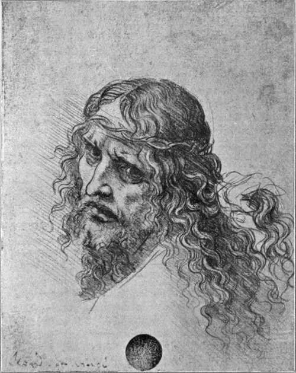

The Records, 1494-1519. Part 4
Description
This section is from the book "Leonardo Da Vinci", by Edward McCurdy. Also available from Amazon: Leonardo Da Vinci.
The Records, 1494-1519. Part 4
He made a replica of the sketch, and leaving one with the Marchioness, took the other with him to Venice to serve as cartoon for the picture. There it was seen by the maker of musical instruments, Lorenzo Gusnasco da Pavia, who wrote enthusiastically to Isabella on March 13th, 1500, that it was extremely life-like and incredibly well done. A year later she appealed to Leonardo to send her a copy of the cartoon because her husband had given away the one which he had left at Mantua.
In letters to the painter and to intermediaries in Florence from 1501 to 1506 the Marchioness, gradually giving up hope of ever getting her portrait, tried to get some small picture from him, suggesting " a little picture of the Madonna full of faith and sweetness, just as his nature would enable him to conceive her "; and again, that " after his labours on Florentine history for the Signoria, a figure of the Child Christ would be quite a relaxation." But Leonardo, despite all persuasion, did no more than make promises. The replies of her correspondents, Fra Pietro da Nuvolaria and Angelo del Tovaglia present a detailed record of his commissions during these years.1
The portrait in crayons of Isabella d'Este in the Louvre is probably that which Leonardo made at Mantua and took with him to serve as cartoon for the picture, the latter inference arising from the fact of its being pricked for transfer. The comparison with medals and with Titian's portrait of Isabella d'Este leaves no room for doubt as to the identity of subject. The bright animation, the wit and vivacity of the face in the sketch render it the most characteristic representation of one who in esprit was the foremost lady of the Italian Renaissance. Had the picture ever been painted, the cartoon suggests that it would have been a spirituelle sister to the Mona Lisa.
1 Luzio, "I Precettori," etc., and "Arch. Stor. delP Arte," 1888, p. 181.
From Mantua he went with Pacioli to Venice, writing there a few notes of the names of people he met, and an observation as to the amount of tide on the Adriatic.
The Duke had reoccupied Milan in February, 1500, with an army of Germans and Swiss, but he was defeated and taken prisoner on the 10th of April, and probably the movements of the two friends turned on the issue of the battle, for they seem to have left Venice immediately afterwards and were at Florence by April 24th, at which date Leonardo drew out money from his account at the Hospital of S. Maria Nuova.1
Nearly two decades had elapsed since his first departure to Milan. The interval of time had effected an almost complete change in the art world of Florence. Verrocchio, the Pollaiuoli, and Ghirlandaio had died. Botticelli and Lorenzo di Credi had joined the followers of Savonarola, and after the Friar's death in 1498 the former had almost entirely given up painting. Baccio della Porta entered the Dominican Order as Fra Bartolommeo in 1500, and for four years, according to Vasari, abstained altogether from painting. Of the band of artists who in the time of Lorenzo de' Medici were foremost in executing commissions, only Filippino Lippi was still at work in Florence when Leonardo returned. The star of Michelangelo had arisen, and his name alone went far to redress the balance of the loss. But for five years from 1496 Michelangelo was absent from Florence, residing mainly in Rome.
1 Uzielli (1872), Doc. X.
Plate 14. Head Of Christ, Crowned With Thorns
Alinari photo - Accademia, Venice
Whatever position Leonardo had attained in the estimation of his compatriots before his departure for Milan, he must have returned with greater prestige as the artist of the Last Supper and of the model for the Sforza statue. This may be inferred from Vasari's statement that Filippino Lippi retired in his favour from a commission for the Servite monks, and that when his cartoon for the Madonna with S. Anne was finished, not only the artists, but all Florence came to see it, in "a concourse such as one sees flocking to the most solemn festivals." Fra Pietro da Nuvolaria's description of the cartoon in a letter to Isabella d'Este of April 3rd, 1501, it being then not quite completed, proves it to have been one of the earliest, if not the earliest, of the commissions undertaken after his return to Florence. The letter expressly states that he had done nothing else. But at about this time he must have commenced the portrait of Madonna Lisa, wife of Francesco del Giocondo, on which, according to Vasari, he was engaged for four years. Of this commission there is no precise evidence of date or document. Assuming, however, that Vasari's testimony as to the time spent on it is as correct, say, as that of Sabba da Castiglione of the sixteen years spent on the Sforza statue, the commission must have been given to him very soon after his arrival in Florence, and Milanesi even places it in the year 1500.
Another letter1 from Fra Pietro to Isabella d'Este states that he is busy with a small picture for Robertet, the Secretary of the King of France, in which the Madonna was represented disentangling her spindles, and the Child has laid hold of the winder and is looking intently at the four spokes, which form a cross.
1 Calvi, "Notizie," etc. (1869).
There is a curious emphasis in a sentence repeated in Fra Pietro's letters, which is somewhat inconsistent with their descriptions of the pictures upon which he was occupied. " He is entirely devoted to Geometry, and is very impatient of painting." " His mathematical studies have so estranged him from painting that he cannot endure to use a brush."
In spite of the commissions which awaited him in Florence, he was impatient of painting. He never shared the artist's complete absorption. He had always, in thought at any rate, wandered between the two worlds. Florence awaited Leonardo the artist, but for the scientist, the theorist, the constructor, the path led elsewhither. He was in Florence in July, 1501, when he gave a receipt for the rent of his vineyard outside the Porta Vercellini at Milan, and was seen by Manfredo de' Manfredi on behalf of Isabella d'Este, and in March of the following year he was consulted by Francesco Malatesta as to the value of certain vases which the Marchioness desired to purchase. Soon afterwards records show .him to be in the service of Caesar Borgia as military engineer, inspecting the fortresses of Romagna. He may have seen Caesar Borgia when the Duke entered Milan with Louis XII., in September, 1499. Alvisi conjectures that he was in the Duke's camp shortly before the surrender of Faenza, in April, 1501, which I find difficult to reconcile with the evidence of his presence in Florence, though it is not impossible that he went and returned. The two historians of Caesar Borgia suggest that he was engaged in his service in the autumn of 1501. But of such notes in his MSS. as relate to places visited in the tour, the six which are dated are between July 30th, 1502, and September 6th, 1502. He had, therefore, commenced upon the duties of his office before the issue of the patent of authority by Caesar Borgia to facilitate his progress.1
Continue to:
Tags
leonardo da vinci, pictures, drawings, galleries, statues, da vinci